[SH4] Looking into Henry's Bathroom
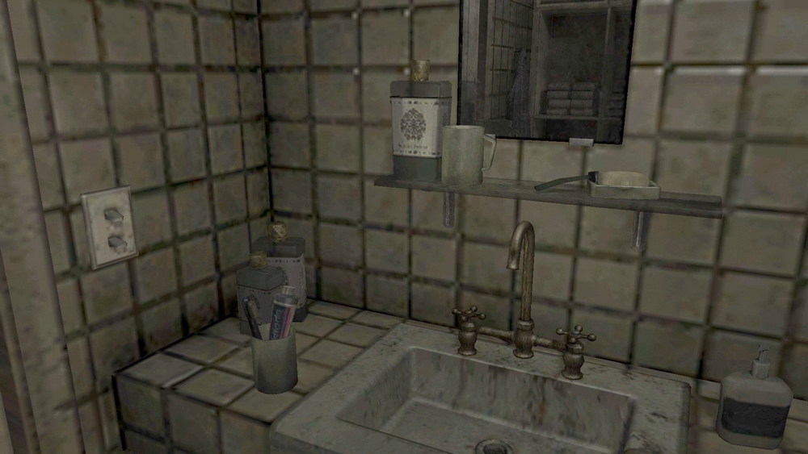
Exploring the Bathroom in Room 302
This is a mirror of the DeviantArt version linked above, provided as a backup and for easier access.

Right after the opening, when Henry steps out of the bedroom, the hole event has not triggered yet, so you can see the bathroom in its normal state. Since it's a private space, I'll not go into as much detail as I did with the kitchen, just the main points.
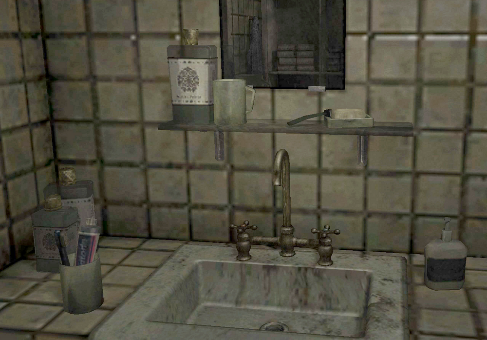
First, his shampoo and conditioner (or maybe body wash) are from the brand "Roxyx." But it doesn't actually exist.
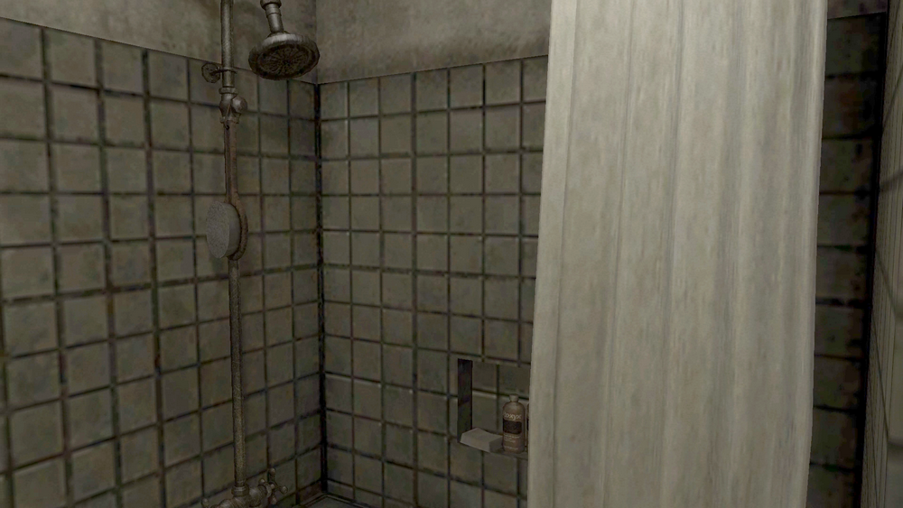
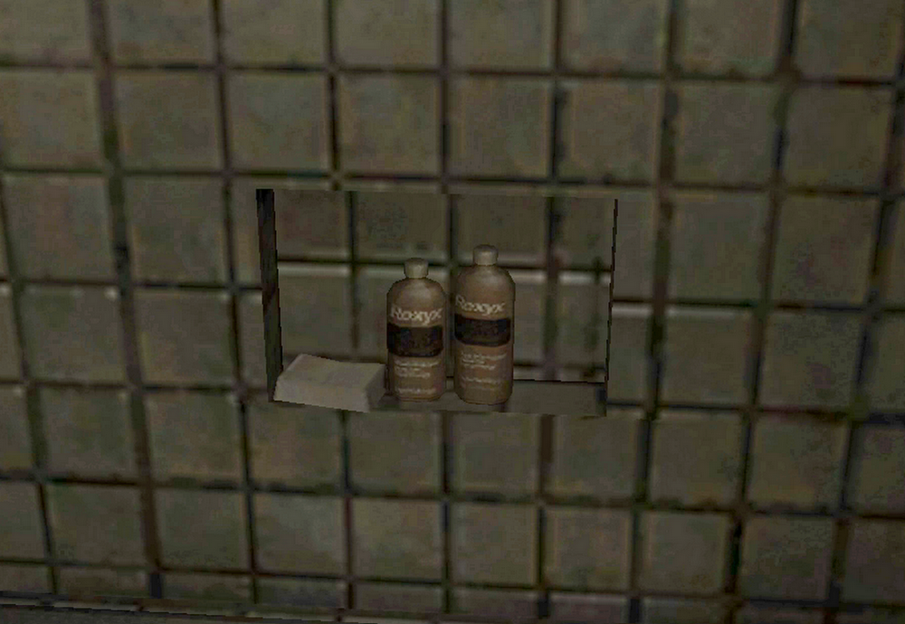
I once tried to read the text on the toothpaste and bottles, but I gave up. I'm not sure, but the area pointed to by the arrow looks like "Premium," maybe? Leaving a razor on the sink also gives off that living alone like. The level of detail is impressive!
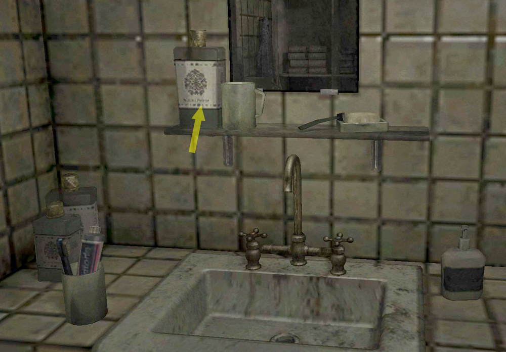
In bathrooms you often see in American TV shows and movies, the mirror opens into a cabinet, and there is that familiar scene where someone grabs medicine from behind it. A lot of Japanese people admire those "medicine cabinets," but this one is a simple mirror, the kind that's more common in Japan.
People have pointed out other Japanese style elements in this apartment too, like having a washing machine in each unit or doors that open outward. Well, this game was created by Japanese devs, after all.
This is a storage shelf.
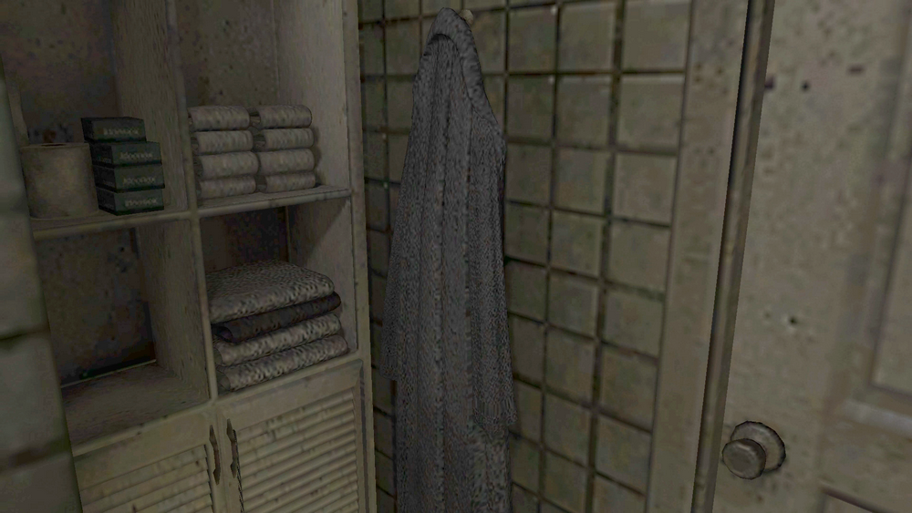
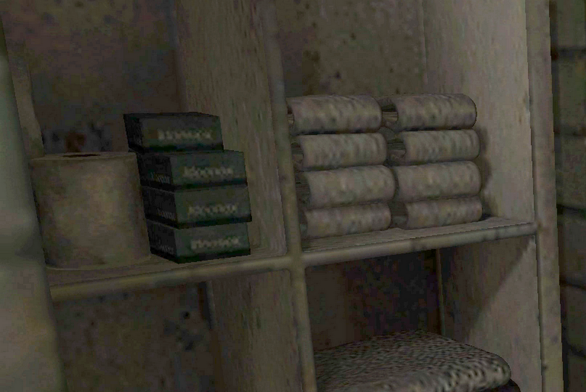
I've always wondered what those green boxes next to a roll of toilet paper are. They're probably something he bought on sale, or something he really needs. If that's the case, maybe they're razors?
The toilet seat is up, but that is probably less about him being a man and more about the recurring toilet event that has been around since Silent Hill 2.
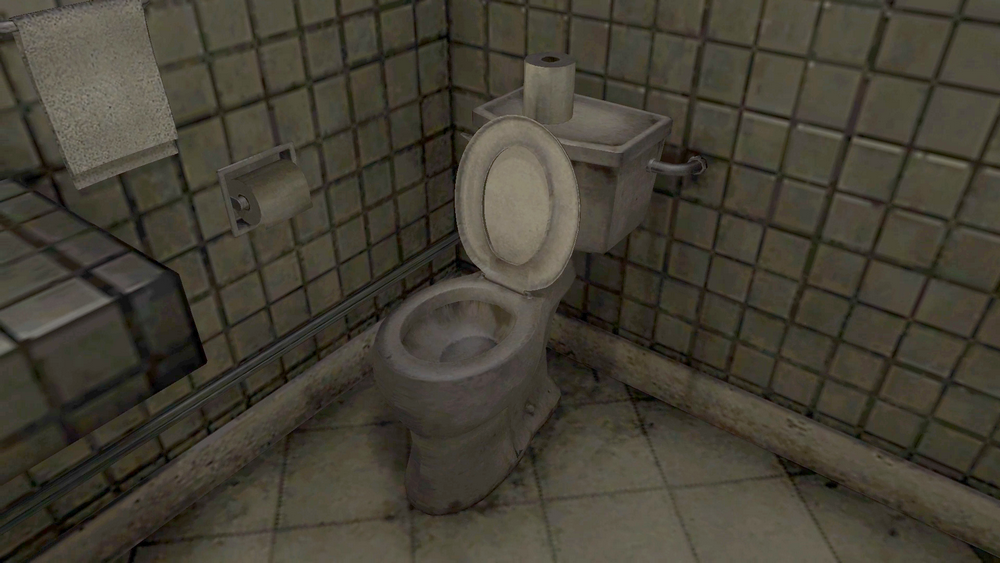
When you return from the Building World, the options shown below appear.
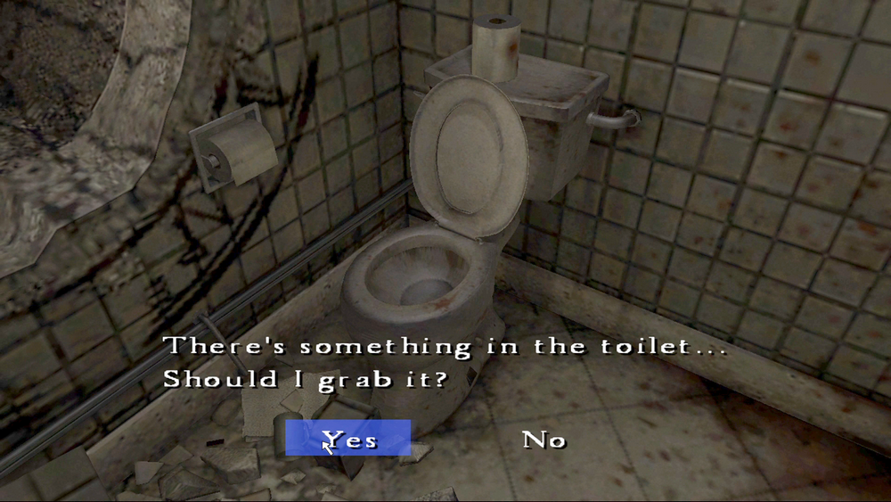
There's something in the toilet...
Should I grab it? [Yes / No]
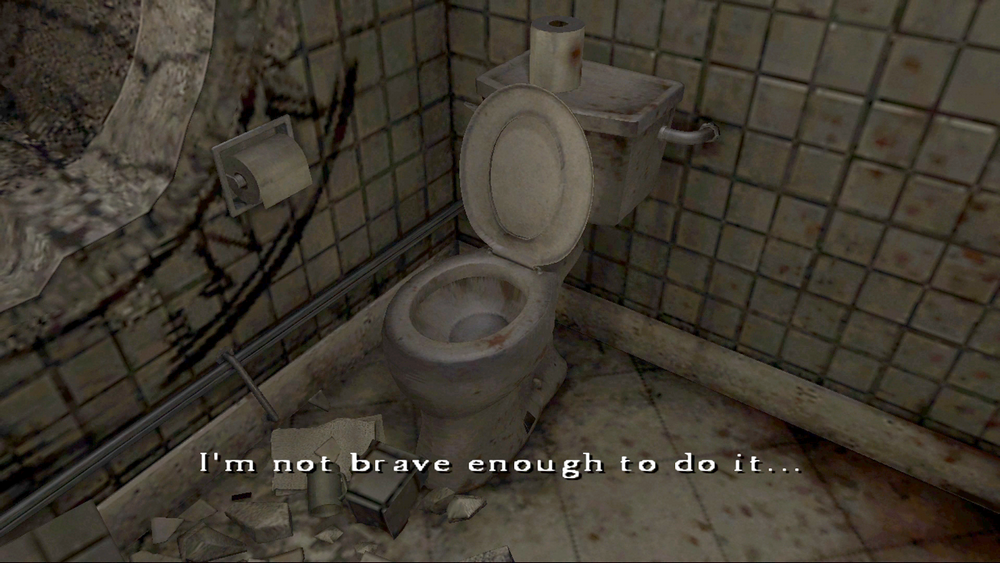
I'm not brave enough to do it...
Even if you choose "Yes," Henry stops himself because he isn't brave enough. This toilet is still relatively decent for this series, though, compared to the filthy ones in Silent Hill 2 or Silent Hill 3. And it's his own place. It makes you wonder if he's ever even cleaned the toilet once in the two years since he moved in...
Back in the day, fans speculated that you were originally meant to pick up a Dirty Stone here. The idea was that washing it would turn it into the Channeling Stone and lead to a non-existent UFO ending.
Well, after checking out this single guy's bathroom, head to the living room and do three things: open the item box, watch Cynthia's cutscene by the window, and watch the cutscene at the front door. This triggers the hole appearing in the bathroom and lets the story move on.
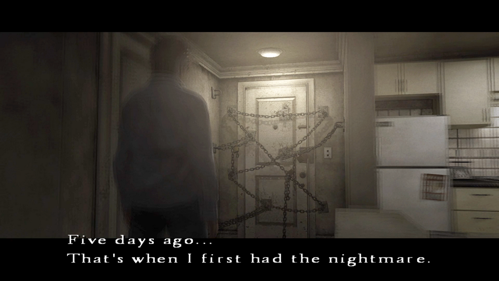